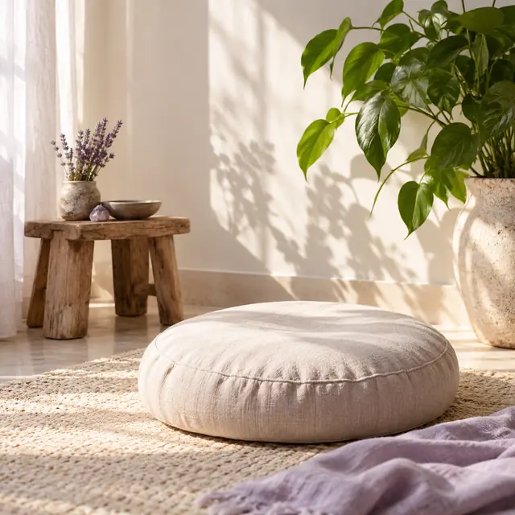
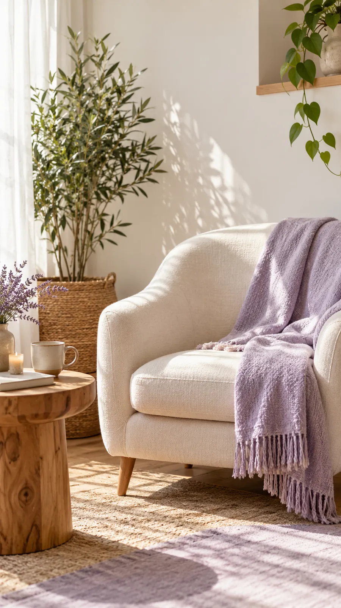
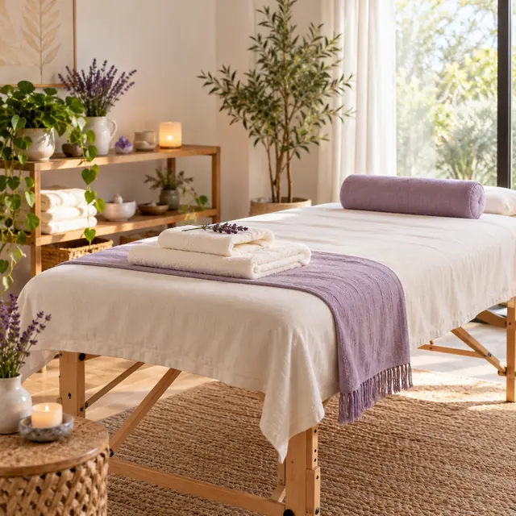
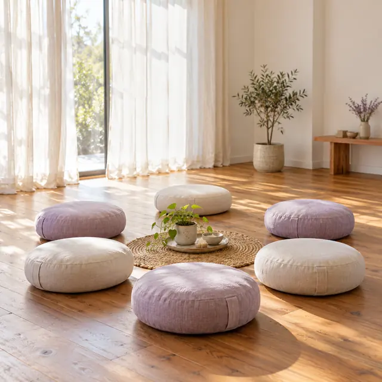
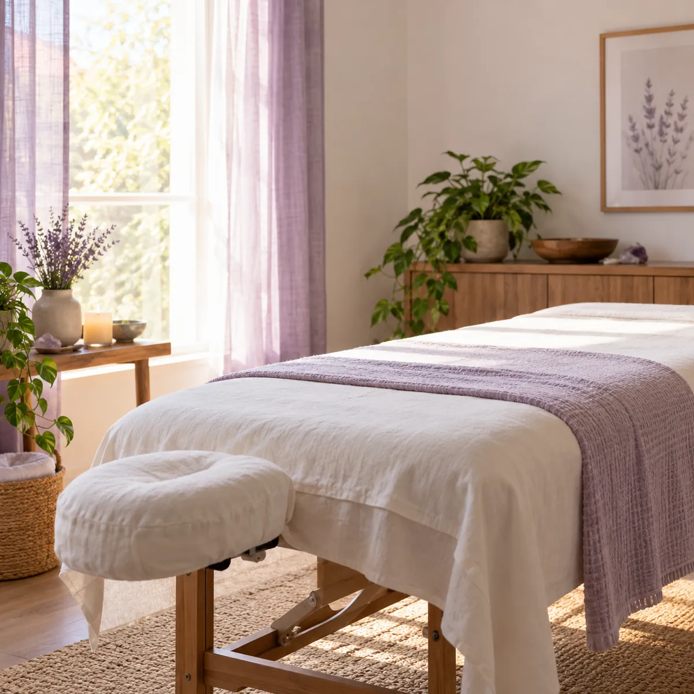
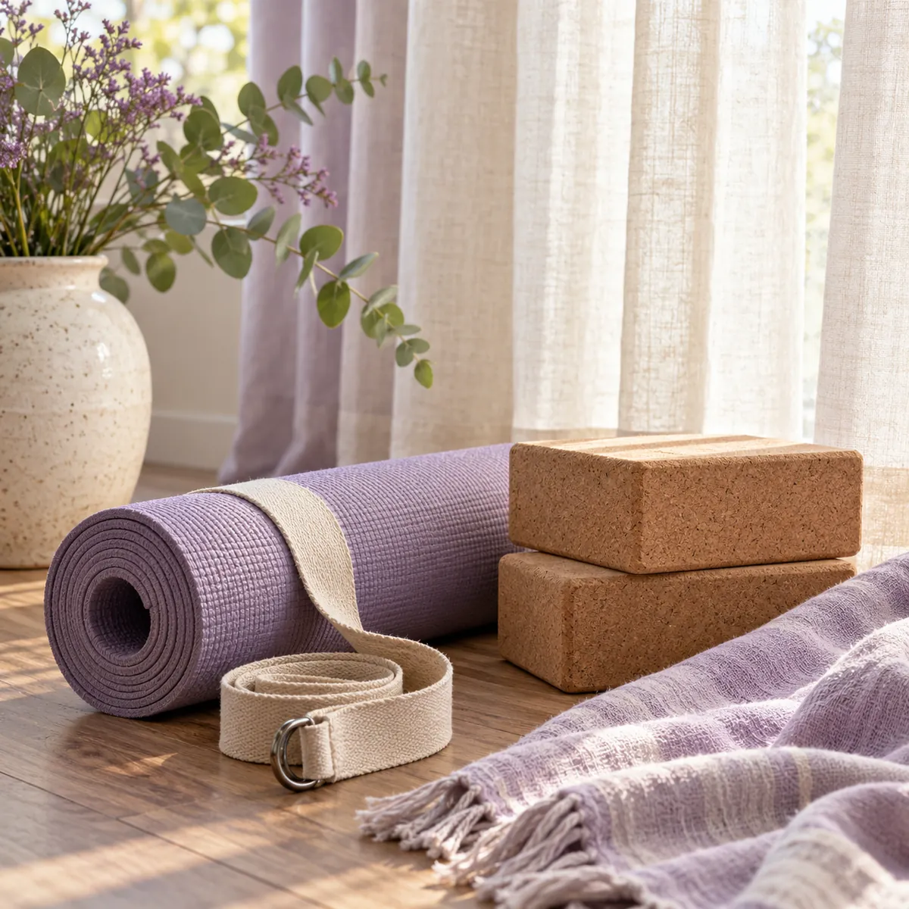
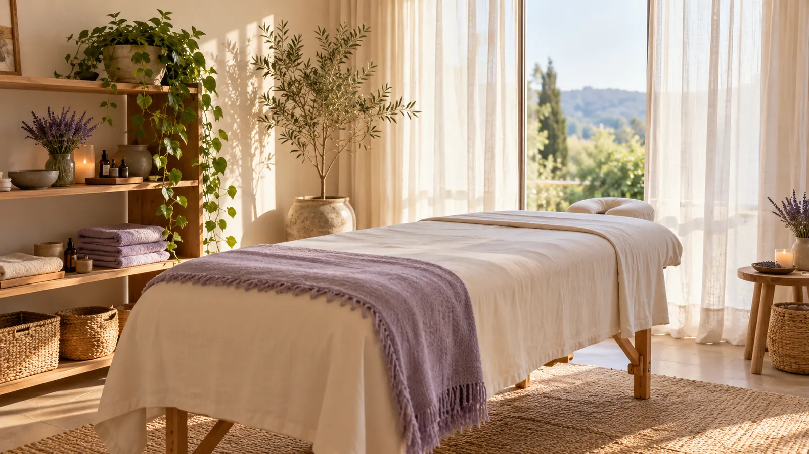

Sesiones individuales
Un espacio de acompañamiento para tu proceso personal.
Acompañamiento integrativo y bienestar
Sesiones individuales con biodescodificación, Reiki, trabajo energético y masaje, a tu ritmo y sin recetas.


Un espacio de acompañamiento para tu proceso personal.

Un momento para habitar el cuerpo y reconectar con tu bienestar.

En preparaciónEncuentros grupales para vivir las herramientas en primera persona.
Cada sesión combina lo que tu momento necesita: la palabra, la energía y el cuerpo.
Para mirar con otros ojos lo que se repite y encontrarle sentido a lo que estás viviendo.

Para cuando sentís la energía baja, la cabeza no para o necesitás recuperar tu eje.

Para soltar tensiones y habitar el cuerpo con más presencia.
Andrea Álvarez · Terapeuta integrativa, canalizadora energética y masajista profesional.
Acompaño procesos de desarrollo personal y transformación desde una mirada integrativa: el cuerpo, las emociones y la energía en un mismo trabajo.
Cada proceso es único: no hay recetas, hay herramientas que se eligen según lo que estás viviendo.
Formación y trayectoria: información por completar.
La Plata, Buenos Aires
Te paso la dirección exacta del espacio al coordinar tu turno.
Elegí lo que más se parece a tu momento y te cuento qué propuesta suele acompañarlo.
Sesión individual
Contame qué te trae y te propongo por dónde arrancar. No hace falta que sepas qué herramienta elegir.
Las terapias complementarias acompañan y no reemplazan un tratamiento médico o psicológico.
No. Me contás qué te trae y te propongo por dónde empezar; la herramienta la definimos en la sesión, según tu momento.
Por WhatsApp: me escribís, elegimos día y horario y te paso la dirección del espacio.
No. Son un acompañamiento complementario. Si estás en tratamiento, seguí con tu profesional de salud.
Ropa cómoda y un rato sin apuro, para no tener que salir corriendo después.
Los talleres grupales están en preparación. Escribime y te aviso cuando haya fecha.

Escribime, contame qué te trae y coordinamos día y horario para tu sesión.